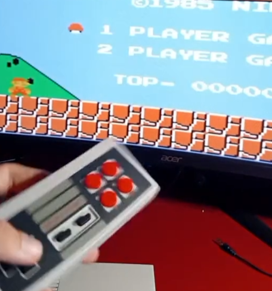
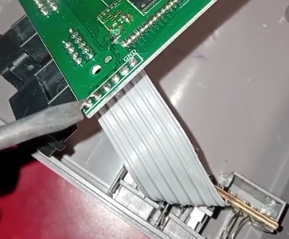
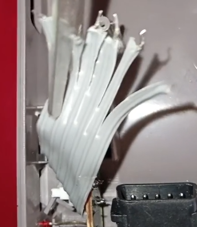
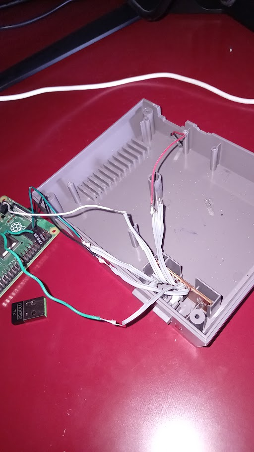
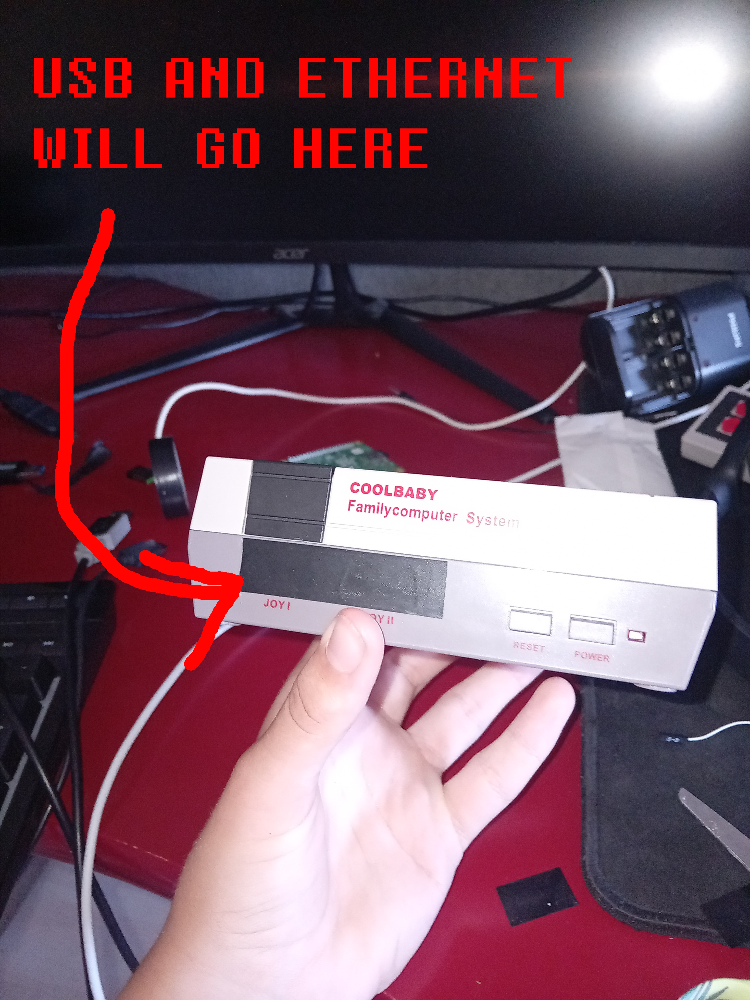
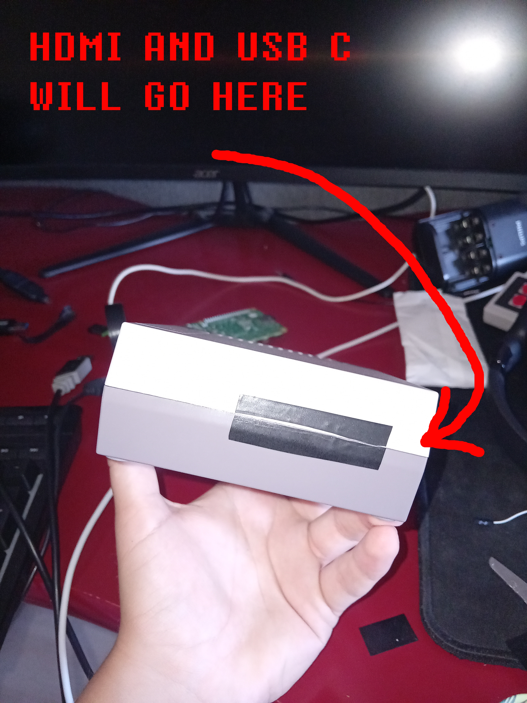
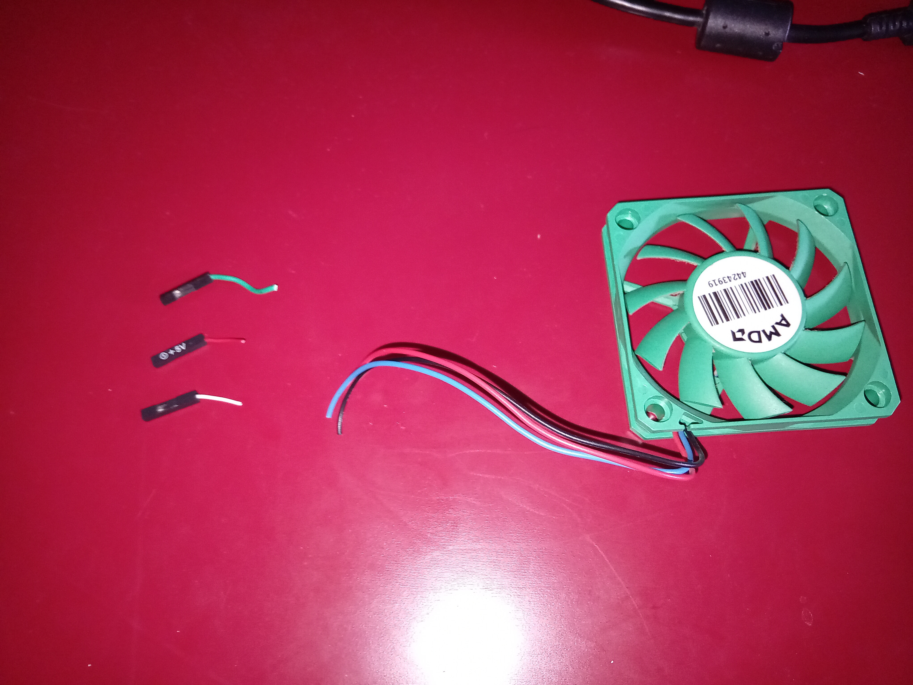
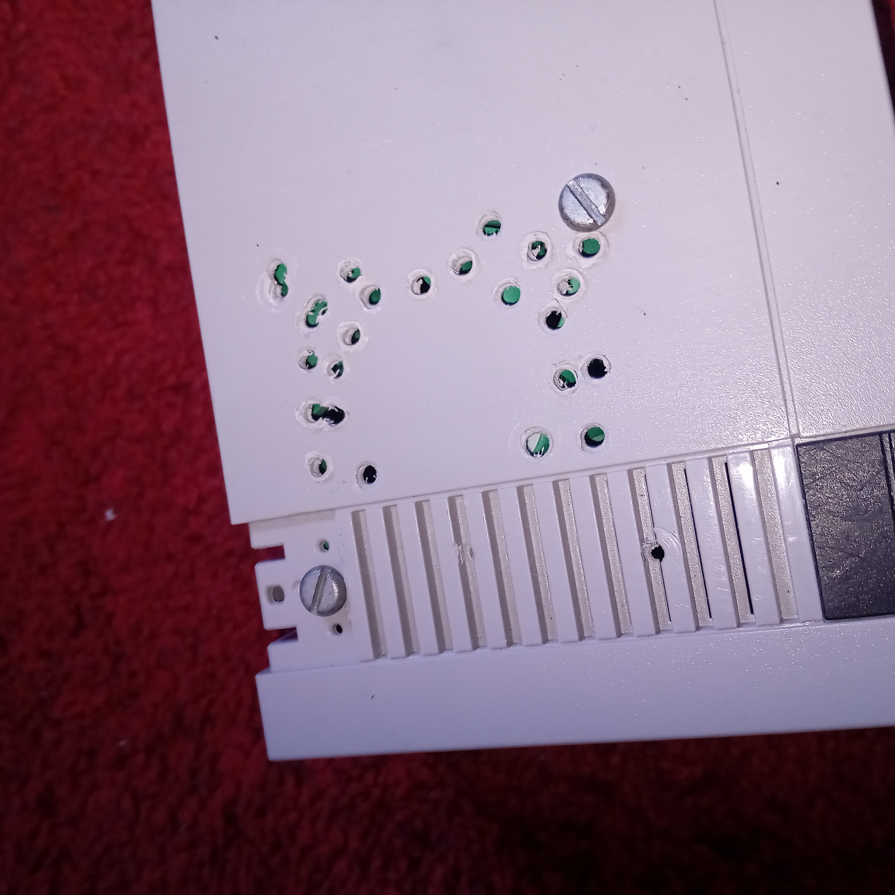

Chinese NES case tranformation
[Go Back] Published: Sep. 4th 2024
(ONGOING)
This is my first "blog". I just wanted to basically document me transforming this knockoff chinese NES classic into a case for my Raspberry Pi 4
I got this for christmas 2018 from my uncle and I haven't used it since basically lol. So now we're making it into a silly little case for my Raspberry Pi.
Im gonna stop yapping and start to write the actual blog or whatever.


Before I began the transformation I played Super Mario Bros. on it for the very last time ever :,(
If you would like to see when I played this "console", I actually recorded it on my tiktok.

When I opened it up I saw that the power button was a different module from the rest of the board. Which meant I could reuse the power button for the Pi and possibly even the power LED.
As you can see on the left I started to desolder the cables from the board.


I started cutting the cables apart from eachother. So I could solder female pin connectors to the cables. Im not a pro solder guy so I didn't do a great job here but it worked out in the end XD.
After that I installed retropie to the Raspberry Pi and I figured out that you have to write a shutdown script for the power button to work. And after all that it works like a charm!
It took a long time to figure out what kind of position I wanted to use for my Raspberry Pi. In the end I actually asked my mother for a second opinion and she chose the position in the middle picture so that what we're going with ¯\_(ツ)_/¯.
EDIT: I went for the middle picture position but just not upside down like the picture.



I put it together for the picture here and started marking with black tape where I was gonna cut holes.
(I forgot to mention that earlier I accidentally busted the power LED somehow ¯\_(ツ)_/¯)
So this didn't work out exactly as I planned...
The upper USB ports don't really fit. But it is a work in progress. The Raspberry Pi isn't stuck in place either. So it wiggles around everytime I plug something in. I put some glue to put some height for the Pi but it ended up backfiring and making it to high up. Which is why the upper ports are unusable.
Don't worry I can problably fix this....


I found this old cpu fan. So I just thought it could be used with the pi.
The fan had a 3-pin connector so I cut it off and soldered the 1-pin connectors to the individual cables instead. And KABOOM everything just worked without any issues! I tried to make the fan controlled by the cpu's temperatures but it just didn't work for some reason.
I will get back to the actual case now.


I made some holes for the fan as you can see lol.
I also took two screws and screwed in the fan so now its properly mounted inside the chassi.
I also mounted the rpi with two nails from the bottom (if you look closely you can see the nails).
UNDER CONSTRUCTION...